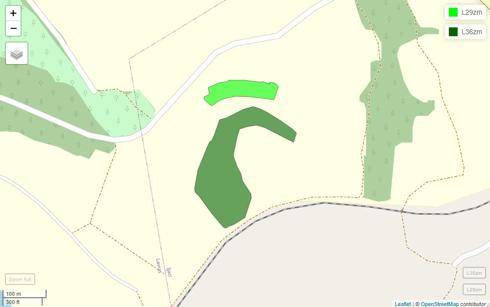

Chapter 1 Introduction to Environmental Geocomputation with R
1.1 Introduction
The deterioration of renewable resources has affected environmental sustainability, and that population growth, pollution, and climate variation over specific periods of time have determined the collapse of civilizations without sufficient technology to reverse the natural impacts on the progress of these populations (Burrough and McDonnell 1998; Alves et al. 2020).
Almost everything that happens happens somewhere, so geographic location is an important attribute of activities, policies, strategies, and planning. Geographic information systems are a class of information systems for mapping and managing the location and occurrence of events, activities, and other events where the location aspect has been used in problem solving, called in this case geographic problems, as in the following situations (Burrough and McDonnell 1998; Longley et al. 2001):
- Agricultural and environmental management;
- Urban planning;
- Health management;
- Delivery companies;
- Navigation, definition of transportation routes and trips;
- Geodemographic consultation;
- Tourism;
- Military organizations and border defense;
- Archaeology;
- Epidemiology;
- Marketing;
- Registration and evaluation of urban and rural properties;
- Social studies;
- Environment.
1.1.1 Geographic information systems
The term GIS refers to systems in which geographic data have been processed (Câmara and Medeiros 1998) and geoprocessing is the technology involved in the process of obtaining results and products using GIS. GIS has been defined as a powerful set of tools to obtain, store, retrieve, transform and display spatial data of a given region for a given purpose (Burrough and McDonnell 1998), however, other definitions have also been made under different contexts of use (Table 1.1) (Burrough and McDonnell 1998; Longley et al. 2001):
| Definition | Context of Use |
|---|---|
| A container of maps in digital form | General Public |
| A computational tool for solving geographic problems | Designers and decision makers |
| A spatial decision support system | Management scientists, operations researchers |
| Mechanized Inventory of Geographical Features | Utility Managers, Transportation Officials, Resource Managers |
| Tool to reveal invisible issues in geographic information | Researchers and Scientists |
| More accurate and cheaper tool to perform geographic operations on data than manually | Resource and planning managers |
In this context the main characteristics of a GIS are identified (Câmara and Medeiros 1998):
- Integrate geographic information from cartographic data, census, urban and rural registration, satellite images, networks and digital terrain models in a single database;
- Combine information through algorithms for manipulation and analysis, consultation, retrieval, visualization of tables, graphs and maps from operational mechanisms on the geographic database;
- Analyze spatial relationships between geographic objects;
- Establish topology and structure of spatial relationships of neighborhood, proximity and relevance established between geographic objects;
- Store the topology of a map.
Therefore, GIS technology was considered different from computer-aided design (CAD) technology, i.e., in most CAD models, drawings do not have descriptive attributes, but only graphical properties such as color and thickness, without storing the topology of an object on a map (Câmara and Medeiros 1998).
1.1.2 Geocomputation
Geocomputation refers to the science of geography in a computationally sophisticated environment. In essence, geocomputation derives from the field of artificial intelligence related to the application of a computer science paradigm to study all types of geographic phenomena, including physical and human systems, using relatively massive computing power to tackle major challenges of immense complexity. Therefore, geocomputation can be defined as the science, art and technology of solving complex spatial problems with computers (Openshaw and Abrahart 2001).
The objectives of geocomputation can be described as (Openshaw and Abrahart 2001):
- Accelerate existing computer-related activities so that more comprehensive experiments can be performed;
- Improve the quality of results by using computationally intensive methods to reduce the number of assumptions and eliminate shortcuts and simplifications imposed by irrelevant computational constraints;
- Enable the analysis of larger databases and obtain better results considering the ability to process data with higher resolution;
- Develop new approaches and methods based on computational technologies from disciplines such as artificial intelligence and computer vision, new ways of solving optimization problems, being opportunistic and entrepreneurial, in order to solve old problems using new technologies and innovations relevant to geographic issues, but which are currently limited by processor speed and memory size.
1.1.3 Spatial and geospatial context
When the geographic adjective used is the term spatial, the object or process occurred on surfaces of other planets, in the space of the cosmos, or in the space of the human body captured by medical images. With respect to the term geospatial, this denomination occurred to specify objects and processes that occurred near the Earth’s surface or that were relative to planet Earth (Longley et al. 2001).
Geospatial geographic information and analysis is commonly used by society not only to determine the fastest route to a location through mapping websites, but also, for example, to assess environmental impact in natural areas and perform zoning in regions to assess the spatial distribution of existing wetlands, land use and cover, slope, terrain elevation, hydrological and transportation network (Figure 1.1) (Jensen and Jensen 2012).
FIGURE 1.1: Cell phone with GPS technology and mapping capabilities to search geospatial databases through traditional cartography or satellite imagery.
1.2 Decision levels in geocomputation
Geographic problems are classified according to the decision context in (Câmara and Medeiros 1998; Longley et al. 2001):
- Scale or level of detail required that determines spatial correlation between geographic phenomena;
- Type of demand or purpose that determines thematic correlation between geographic phenomena;
- Occurrence over time that determines temporal correlation among geographic phenomena;
- Topological correlation such as adjacency, pertinence, intersection between geographic phenomena.
In spatially distributed data, geographic coordinates and data attributes can be used to identify and locate attributes in geographic space. Geoinformation is disseminated in the form of maps, aerial photographs, satellite images on Internet mapping services such as (Jensen and Jensen 2012):
1.2.1 Decision-making process in geocomputation
Using information systems it is possible to manage, organize, store, access, retrieve, manipulate, synthesize and apply knowledge to solve problems. Knowledge about the meaning of the terms data, information, evidence, knowledge, and wisdom is useful to understand about the infrastructure of the decision-making process, the ease of sharing, and examples in geocomputation. Data is described by numbers, text, or symbols without context. Data can be shared as a stream of bits and with a set of data one can build a database (Longley et al. 2001).
Some types of geographic data used in geocomputation are (Burrough and McDonnell 1998):
- Maps, charts, and topographic plans;
- Images obtained from satellites, aircraft, and the surface;
- Administrative boundaries and census data;
- Statistical data;
- Marketing survey data;
- Data on gas, water, electricity utilities and locations;
- Sampling data on soil, water, atmosphere, biological activity, disasters, in different spatial and temporal resolutions.
A database can be formed by the union of several data sets and the volume of data varies according to specific applications (Tabela 1.2) (Longley et al. 2001).
| Size | Bytes | Application |
|---|---|---|
| 1 megabyte | 1 000 024 | Simple database of a small project. |
| 1 gigabyte | 1 000 000 024 | Network of roads in a small town or country. |
| 1 terabyte | 1 000 000 000 024 | Earth’s wavelength spectral reflectance at 30m spatial resolution. |
| 1 petabyte | 1 000 000 000 000 024 | Satellite image of the entire planet Earth at 1m spatial resolution. |
| 1 exabyte | 1 000 000 000 000 000 024 | 3-D representation of the Earth at 10m spatial resolution. |
Knowledge can be synonymous with information if interpretation is added for a certain context, experience, and purpose that determines some learning. Information can exist without knowledge, but for there to be knowledge there must be a learning process. Sharing knowledge between people, or quantifying it, is more difficult than obtaining information about an object or process. Knowledge about how a certain process works can be more important than its appearance, since it can be used for process prediction or new object positions. Also, knowledge is more related to assimilation than to the storage of knowledge. Evidence is considered a middle ground between information and knowledge, i.e. a multiplicity of information from different sources, related to solve several specific problems and with validated consistency. Wisdom is used in the context of decisions made based on all available evidence and knowledge, but weighted according to an understanding of likely consequences. Wisdom is defined at the top level of the decision-making infrastructure hierarchy (Figure 1.2) (Longley et al. 2001).
FIGURE 1.2: Decision-making infrastructure classification used in geocomputation.
1.3 History of geocomputation
Geocomputation is linked by name to what is broadly termed computational science. Computational science is a relative new multidisciplinary paradigm for doing science in the late 20th century. The availability of high performance computers, graphic workstations, speed networks, coupled with major advances in algorithms and softwares, has brought a revolution in the way scientific and engineering investigations are performed. Computational science involves using computers to study scientific problems and to complement the use of theory and experimentation in scientific investigation (Openshaw and Abrahart 2001). The major events of the last decades determined the modern history of geocomputation were divided into eras of innovation (1957-1977), commercialization (1981-1999), and exploitation (1999-present). The intensive use of geocomputation was defined from the time when there was a reduction in the price of computers below a critical threshold.
According to defined innovation criteria (Rogers 1995), geocomputation was considered at the innovation stage in the 1970s, with initial use around the 1980s and, the beginning of maturity occurred in the 1990s. Currently, geocomputation was observed to be in the maturity stage greater than climax (Figure 1.3) (Longley et al. 2001).
FIGURE 1.3: Geocomputation development according to an innovation model.
1.4 Components of geographic information systems
The components of a geographic information system are classified into (Burrough and McDonnell 1998; Longley et al. 2001; Jensen and Jensen 2012) (Figure 1.4):
- Digital information sharing network;
- People;
- Data;
- Software;
- Hardware;
- Procedures and routines.
FIGURE 1.4: Components of a geographic information system.
Data can be stored on the computer’s hard disk, on the Internet, or on other digital data storage devices. The user controls the computer and other accessory equipment with a keyboard and mouse. Software in geographic information system is classified according to functionality into (Burrough and McDonnell 1998; Câmara and Medeiros 1998) (Figure 1.5):
- Data import and verification;
- Database storage and management;
- Data export, visualization and plotting;
- Query, spatial analysis, image processing, data transformation;
- User interface.
FIGURE 1.5: Components of a geographic database.
The basic requirements for a geographic information system according to functionality are specified in (Burrough and McDonnell 1998):
- Show the location of an \(A\) object;
- Show the location of an \(A\) object relative to \(B\);
- Count the number of objects of type \(A\) at a distance \(D\) from object \(B\);
- Evaluate a function \(f\) at a position \(X\);
- Determine the area and perimeter of \(B\);
- Determine the result of intersection between different types of geospatial data;
- Determine the least cost path along a network or continuous surface;
- List the attributes of objects at locations \(X_1\) and \(X_2\);
- Determine objects near others according to a combination of specific attributes;
- Reclassify objects with a particular combination of attributes;
- Use geostatistical methods to model the spatial dependence of an attribute Z in a neighborhood of points at locations \(X_1, X_2,..., X_n\) and predict the value Z at locations \(Y_1, Y_2,..., Y_n\);
- Use statistical and computational intelligence methods to derive new variables from existing variables and vice versa;
- Use a digital model of the Earth and simulate the effect of a process \(P\), at a time \(T\), on a scenario \(C\).
1.5 Geocomputation and other fields of knowledge
Geocomputation works in harmony with other geographic information sciences, including remote sensing, cartography, topography, geostatistics, digital image processing, statistics, computer science, artificial intelligence and computer vision, as well as other sub-disciplines such as engineering, mathematics, logic, physics, chemistry, biology, and sociology (Figure 1.6).
FIGURE 1.6: Geocomputation and other sciences.
Geocomputation is concerned with computational techniques, algorithms, and paradigms that involves four leading edge technologies (Openshaw and Abrahart 2001):
- GIS, for data creation;
- Artificial intelligence and soft computing, to provide smart tools;
- High performance computing, to provide the power;
- Science, to provide the philosophy.
1.6 Geocomputation societies
In geoprocessing societies are promoted stimulus to development, study and research in the field of geographic information systems and related areas, to bring together people and entities with interest in geographic problems, development and applications of geocomputation and interaction with other technical-scientific societies, involved directly or indirectly with this area. Some related geoprocessing societies are:
- National Geographic Society
- Geographical Information Systems International Group (GISIG)
- Geospatial Information \(\&\) Technology Association
- The Association For Geographic Information
- American Geographical Society (AGS)
- Cartography and Geographic Information Society (CaGIS)
- Canadian Association of Geographers (CAG)
- Geospatial Information and Technology Association (GITA)
- The Imaging and Geospatial Information Society
- University Consortium for Geographic Information Science (UCGIS)
- Urban and Regional Information Systems Association (URISA)
1.7 Data sources in geocomputation
Government agencies and companies perform work in the area of geocomputation, where geospatial data infrastructure can be obtained for carrying out projects and research work through images and thematic maps of the territory and products derived from basic data obtained by scientific research (Figure 1.7)(Jensen and Jensen 2012). Some geocomputation data and products can be obtained on the Internet:
- Agência Espacial Brasileira
- Instituto Nacional de Pesquisas Espaciais
- Canada Center Remote Sensing
- Centre National d’Etudes Spatiales
- Scientific and Industrial Research for Australia (CSIRO)
- European Space Agency
- National Aeronautics And Space Administration
- National Remote Sensing Agency India
- National Remote Sensing Agency Japan
- Google Earth Engine
- IBGE
- spData
- rnaturalearth
- raster getData
- BDMEP
- ANA
- NOAA
FIGURE 1.7: Geospatial data infrastructure.
1.8 Geocomputation journals
Journals in the area of geocomputation are related to the progress of knowledge in the area, in order to facilitate communication among professionals and to update the development of science and technology using geographic information systems. Some journals with a theoretical and practical approach to geocomputation can be accessed via the Internet, such as:
- International Journal of Geographical Information Systems;
- Computers and Geosciences;
- Computers;
- Computers, Environment and Urban Systems;
- International Journal of Applied Earth Observation and Geoinformation;
- GeoInformatics;
- Geospatial Solutions;
- GIScience And Remote Sensing;
- IEEE Transactions on Geoscience And Remote Sensing;
- Pattern Recognition;
- Theoretical and Applied Engineering;
- Transactions in GIS;
- Annals of the Association of American Geographers;
- Cartography and Geographic Information Science;
- The Cartography Journal;
- Geographical Analysis;
- GeoInformatica;
- Journal of Geographical Systems;
- Transactions in GIS;
- URISA Journal.
1.9 Geocomputation, society and investments
Geographic information science is linked to the following context in society (Figure 1.8) (Longley et al. 2001):
- The individual;
- The computer;
- Society.
Research on the individual is related to cognitive science to understand geospatial concepts, learning and reasoning about geographic data, and computer interaction. Research on the computer is characterized by issues of representation, adaptation to new technologies, geoprocessing and visualization. Research on society is distinguished by the theoretical and practical scope for studying relevance in the social context.
FIGURE 1.8: Contextual relationship of geoprocessing to society.
The use of geoprocessing is organized in different economic sectors of modern society. The centrality of geospatial infrastructure is composed of sectors of (Lo and Yeung 2007):
- Technology;
- Research;
- Services;
- Data;
- Standard Setting;
- Social policy.
The geospatial information sector, around geospatial infrastructure is composed of (Lo and Yeung 2007):
- Hardware and software vendors;
- Map production;
- Surveying;
- Remote sensing;
- Geographic information system;
- Satellite positioning system.
In the sector of consumers of products, services and spatial information, around the geospatial information and infrastructure sectors there is subdivision of application sectors into industrial, business, academic and public sector. In the industrial sector applications of geocomputation are observed in (Lo and Yeung 2007):
- Agriculture, forestry and livestock;
- Environment;
- Mining;
- Transportation and logistics;
- Construction.
In the business sector applications of geocomputation are observed in (Lo and Yeung 2007):
- Bank financing and insurance;
- Consumption of geographic information services.
In the academic sector, geocomputation is used in (Lo and Yeung 2007):
- Education;
- Research and publications;
- Training.
In the public sector applications of geocomputation are observed in (Lo and Yeung 2007):
- Defense;
- Public health;
- Emergency response;
- Municipal management infrastructure;
- Land registration and taxation;
- Urban planning
- Democratic participation of communities.
Designing and implementing a functional geocomputation system can take more than a year, depending on the size of the organization and the amount and type of location data used (Longley et al. 2001; Jensen and Jensen 2012). In the industry service, for example, geospatial data is used daily to answer geographic questions for customers, as the example of surveys with farmers to maximize crop yields with precision agriculture (Jensen and Jensen 2012).
Real-time location-based services (SBL) are considered a new branch of geospatial application. In this type of service, the location of a mobile device is used to deliver services and conduct business in real time by combining geocomputation, positioning system, wireless mobile device, and internet (Figura 1.9).
FIGURE 1.9: Technologies used in real-time location-based services with geocomputation.
1.10 Geocomputation as profession
Once a geographic information system is developed, the system can be used to make geospatial decisions, perform mapping and monitoring of the environment. However, the system must be used intelligently to make good decisions (Jensen and Jensen 2012).
Jobs in geocomputation may be available in public agencies (national, state and local government; Colleges and universities) and private commercial companies. The demand for geocomputation professionals increases as geospatial data and analysis are more commonplace (Jensen and Jensen 2012). With the advent of satellite positioning technologies and availability of very high spatial resolution satellite imagery of much of the Earth via the Internet (Google Earth, Google Maps, MapQuest, Bing Maps), there has been increased interest from the general public in geospatial issues. In universities and colleges, geocomputation principles are covered in disciplines such as agronomy, geography, geology, engineering, natural resource management, forestry, agriculture, marine sciences, and others. Despite this, the educational system cannot keep up with the demand for qualified professionals in geoinformation science (Mondello, Hepner, and Medina 2008; Jensen and Jensen 2012).
In work demands related to geoprocessing, the following positions are defined (Jensen and Jensen 2012):
- Geographic information scientists and technologists;
- Geographic information systems technicians;
- Mapping technicians;
- Cartographers and photogrammetry specialists;
- Surveyors specializing in geodesy;
- Remote sensing scientists and technologists;
- Remote Sensing Technicians
- Surveyors;
- Surveying Technicians.
Geocomputation jobs can be searched on the Internet at sites to assess the type of skills in demand in the market, typical starting salaries, and other job opportunities (Jensen and Jensen 2012):
The purpose of councils, such as those for engineering and professional registration requirements, is to protect the public from unqualified or unscrupulous individuals. One of the first regulations of this type was contained in the code of laws of Hammurabi, king of Babylon in the 18th century BC. This code of ethics became famous for its “eye for an eye, tooth for a tooth” section. In 1883, registration requirements reached the United States, requiring a license for professionals in different fields to practice their professions. In Brazil, the rules for excluding geoscience professionals from registration due to incompetence or unethical behavior are not often enforced. However, the Federal Council of Engineering, Architecture, and Agronomy adopted the current Code of Ethics for Engineers, Architects, and Agronomists (Confea) on December 24, 1966. Many say that codes of ethics do not fulfill their purpose, but insofar as they postulate a goal to be achieved, they make professionals look to a higher moral plane. In addition, the most important asset a professional has is their impeccable reputation. No amount of money, fame, or knowledge is an adequate substitute. Therefore, ethics can be defined as the obligations that a professional has toward the public and colleagues in order to help them understand what standards should be achieved and what they can expect from their colleagues. Therefore, environmental geocomputation professionals must be loyal, impartial, and faithful to their clients, employers, and the public. In addition, professionals should be interested in public progress, applying their knowledge for the benefit of humanity (McCormac, Sarasua, and Davis 2012; Carvalho Alves and Sanches 2022). In terms of acquired professional knowledge, an analogy can be made between professional performance and the development of a corn plant. Just as ears of corn without grain raise their heads disdainfully to the sky, so do the arrogant, while those full of knowledge (or fruit) lower them to the ground. In other words, empty ears of corn without grain symbolize arrogance and emptiness. Ears full of grain, on the other hand, bow to the ground in a gesture of humility, reflecting the wisdom and abundance that lead to modesty, the opposite of pride. Pride represents the haughtiness of an ear of corn, which, due to a lack of content (knowledge or fruit), stands up without reason, not bowing.
1.11 The future of geocomputation
High performance computing systems have become commonplace and cloud computing is now available as a commodity. Petabyte-scale remote sensing data is made available by Brazilian, North American and European government agencies for free. Using all the available resources requires expertise and a lot of dedication. Considering the difficulties of using information technology in relation to data acquisition and storage, data format, database management, allocation of machines, CPUs, networks, multiple geocomputation routines, virtual libraries and remote sensing data were created on the internet. Through the virtual libraries, data catalogs and information readily available via high performance parallel computing service, there is rapid access and visualization of search results in geographic database with spatial data infrastructure via interactive interface on the Internet (Gorelick et al. 2017) (Figure 1.10).
FIGURE 1.10: AppEEARS virtual libraries (top) and GoogleEarth Engine code (bottom) used for digital image processing and obtaining spatial data infrastructure.
1.12 Graphical user interface and command line interface
The development of geocomputation is closely associated with advances in computer and automatic development. The hardware used in geoprocessing has become faster, more efficient, affordable and smaller in size. There are geographic information systems with graphical mouse-click interfaces (GUI), such as QGIS and SAGA GIS software, rather than a command-line interface (CLI) typed by keyboard, as in R (Table 1.3). Reproducibility is a major advantage of command line interfaces, as the same results can be generated by others via publicly accessible code, leading to profound implications for teaching and science (Lovelace, Nowosad, and Muenchow 2019; Pebesma, Nüst, and Bivand 2012).
| Feature | GUI Interface | Command Line Interface |
|---|---|---|
| Basic subjects | Geography | Computer science, Statistics |
| Software engine | Graphical User Interface | Command Line |
| Reproducibility | Minimum | Maximum |
With the sharing of different geographic information systems, geospatial analysis is broadened in terms of analysis possibilities. The Open Geospatial Consortium (OGC) started in 1994 with a group of more than 100 universities, corporations and government agencies with the goal of making geocomputation interoperable and popular. Various analysis and geocomputation data packages can be obtained on the Internet [Jensen and Jensen (2012)).
With the use of geocomputation software the gap between research, science and the technology is bridged in order to obtain algorithms and processing routines in different software with applications for spatial analysis of environmental variables (Goslee 2011; Kwok 2018). R consists of an object-oriented functional programming language and open source cross-platform environment for statistical computing and graphics, advanced geospatial analysis, modeling, and geovisualization, with a wide variety of packages. R is ideal for quickly creating geo-tools without the need to master lower-level languages such as C, FORTRAN, or Java. With the use of R there is easy access to other languages, such as access to C++ and Python code through the Rcpp and reticulate packages, respectively. C++ and Python are used as the basis for the QGIS, GRASS and SAGA GIS (Lovelace, Nowosad, and Muenchow 2019) software (Figure 1.11).
Some free softwares used in geocomputation are:
Some commercial softwares used in geocomputation are:
FIGURE 1.11: R (Superior) and RStudio (Inferior) softwares used in geocomputation.
Regarding commercial software, because of the dynamics of the software business, many programs can change names according to the marketing involved in joining companies and modifications that can occur with time, interest, and market trends.
According to Lovelace, Nowosad, and Muenchow (2019), with the open source of R there has been an evolution in package developments in the geospatial area. The package sf (Pebesma, Bivand, Racine, et al. 2021), for example, is based on its predecessor sp (Pebesma and Bivand 2005; R. S. Bivand, Pebesma, and Gómez-Rubio 2013). With sf we can define simple open source feature pattern and model to store and access vector geometries (Lovelace, Nowosad, and Muenchow 2019).
Maptools (R. Bivand et al. 2020) is used to import ESRI Shapefiles files into nested lists of geometry. rgdal (R. Bivand et al. 2021), released in 2003, provides GDAL bindings for R and there was support for coordinate reference systems via the PROJ library, reprojections, and importing vector file formats. Many of these additional features were developed by Barry Rowlingson and released in the rgdal codebase in 2006 (Lovelace, Nowosad, and Muenchow 2019). With the sp package (R. S. Bivand, Pebesma, and Gómez-Rubio 2013), released in 2005, it is possible to distinguish spatial and non-spatial objects (Pebesma and Bivand 2005). Before 2005, geographic coordinates were treated as an arbitrary number and with sp, there was the creation of generic classes and methods to analyze points, lines, polygons and meshes and attribute data (Lovelace, Nowosad, and Muenchow 2019). In sp, information is stored with coordinate reference system and attributes in geoobject slots with S4 class system and geographic data operations. In sp generic summary methods are also available in the summary() and plot() functions for geographic data. In 2013 and 2018, sp was used in over 100 and 500 packages, respectively (R. S. Bivand, Pebesma, and Gómez-Rubio 2013; Lovelace, Nowosad, and Muenchow 2019).
In the raster package (Hijmans et al. 2020) a system of classes and functions is used for operations with raster type data. A key feature of raster is the ability to work with very large data sets. In raster there is also the development of functions for map algebra. Parallel to these developments of systems and class methods, functions for interfaces of R with other geographic information systems were developed, as in the case of links between R and SAGA GIS by the RSAGA package (Brenning, Bangs, et al. 2018), links of R with Python ArcPy functions via the reticulate package to access ArcGIS geoprocessing functions via the RPyGeo package (Brenning, Polakowski, et al. 2018) and links of R with QGIS, via the RQGIS package (Lovelace, Nowosad, and Muenchow 2019).
Despite methods for making maps using the base plotting and network system of the sppackage (Pebesma, Bivand, Rowlingson, et al. 2021), the demand for advanced mapping capabilities increased after the release of ggplot2 (Wickham et al. 2020) in 2007, with access to base map blocks from online services such as Google Maps. Raster visualization received a boost with the release of the rasterVis package (O. P. Lamigueiro and Hijmans 2020) to visualize geospatial and temporal data (Oscar Perpinan Lamigueiro 2018). Starting in 2018, new packages for map production in R emerged, via tmap (Tennekes 2018; Tennekes et al. 2020), leaflet (Cheng et al. 2021) and mapview (Appelhans et al. 2020) that used the sf class system (Lovelace, Nowosad, and Muenchow 2019).
1.12.2 Installing R
R is an open source programming, visualization and data analysis environment originating from the S (Lovelace, Nowosad, and Muenchow 2019) programming language. The latest version of R for Windows can be obtained for download. Older versions may be more useful if a package used in the data analysis has not yet been updated to the latest version of R. Older versions can be obtained for download.
R can also be accessed through RStudio, an integrated development environment (IDE) for R. In RStudio there is a user-friendly interface to R with features for editing source code with colored syntax, data table viewer, git and github integration, markdown and bookdown output. In RStudio there is free software version and also private version, for companies or individuals who need customer support. The latest version of RStudio for Windows can be obtained for download. Older versions of RStudio can be obtained for download.
1.12.3 Using R with command line
R can be run from an R console or from an RStudio command line environment. We can assign values to objects, such as five numbers to objects \(x,y\) with an arrow (<-) or the equal symbol (=) and then perform the sum of the objects at \(z\), with the following code in R:
y <- c(5,4,3,2,1) # Create y database
y # Evaluate y results
# [1] 5 4 3 2 1
x = c(1,2,3,4,5) # Create x database
x # Evaluate x results
# [1] 1 2 3 4 5
z <- x+y # Create z database with x,y sum
z # Evaluate z results
# [1] 6 6 6 6 6In the case of typing more than a few lines of code in a command prompt environment or when one wants to save a series of commands as part of the analysis of a project one should create an R script file and save it with an R extension to make it easier to retrieve the codes to continue the project at another time.
Several packages for geospatial measurement, mapping and analysis are available in R. The packages are used in solving geographic problems in geocomputation. Searching for information about an R package can be performed based on keywords about the subject of interest by means of the package sos (Graves, Dorai-Raj, and Francois 2020).
The search for relevant scientific publications can be performed automatically using the R software, using the public API of the Crossref database. To achieve this, the cr_works() function from the rcrossref (Chamberlain et al. 2022) package can be used. You can also use this package with the dplyr (Wickham, François, et al. 2021) and readr (Wickham, Hester, Francois, et al. 2021) packages for data processing and export.
Next, as an example, it is shown how to set up directory, install and enable packages, evaluate the version of the operating system and R on the operating system, as well as a keyword-based package search method for application in different subject areas. Finally, the tmap (Tennekes 2018) package is used to map regions of the globe.
1.12.4 Set up directory in R
To evaluate the working directory in R, we use the getwd() function and to set up a directory in R, we use the setwd function with the address of the new working directory.
1.12.5 Installing R packages
The install.packages function is used in the R console to install the sf, sos, tmap, devtools (Wickham, Hester, Chang, et al. 2021), brazilmaps (Siqueira 2017), and GADMTools (Decorps 2021) packages. If a package is not available for installation via CRAN, it may be necessary to download the zip file of older versions of the package and its dependencies for installation.
1.12.6 Loading R Packages
The sf, sos, tmap, devtools, brazilmaps, GADMTools and rcrossref packages are loaded with the library function in the R console.
1.12.7 Evaluating information about computer programs and R packages used
The sf package is installed and enabled to evaluate information about computer programs and R packages used in writing the book.
Using the print(version) function we can evaluate information about the operating system and version of R used.
The version of windows used, the base R packages, as well as other R packages installed on the computer is obtained with the print(sessionInfo()) function.
The installation directory of R packages on the computer is evaluated using the print(.libPaths()) function.
The packageVersion() function is used to evaluate the version of a specific R package installed on the computer, in this case the version of the sf package is taken.
1.12.8 Evaluate the existence of an R package with keywords
Using the findFn() function it is possible to perform searches on existing packages on a subject topic of interest, in this case, with the keywords “gis” and “spatial”, 80 items were found in 2021.
1.12.9 Access Crossref to search for publications using keywords
Using the cr_works function it is possible to perform searches on existing publications on a subject topic of interest, in this case, with the keyword “geocomputation”, 398 items were found.
geo <- cr_works(query = "geocomputation")
geo
# $meta
# total_results search_terms start_index items_per_page
# 1 398 geocomputation 0 20
geo[["data"]][["url"]] # Only the first 4 items with doi url
# [1] "https://doi.org/10.1201/b17091-8" "https://doi.org/10.1201/b17091-13"
# [3] "https://doi.org/10.1201/b17091-26" "https://doi.org/10.1201/b17091-20"
#...1.12.10 Create BibTeX citations
A BibTeX citation can be created for R packages using the write_bib function from the knitr package (Xie 2018, 2023, 2015). As an example, we created the citation for the rcrossref package. Another option is to use the utils package (R Core Team 2023), toBibtex, and citation functions to obtain the citation of an R package in BibTeX or LaTeX.
knitr::write_bib("rcrossref")
# @Manual{R-rcrossref,
# title = {rcrossref: Client for Various CrossRef 'APIs'},
# author = {Scott Chamberlain and Hao Zhu and Najko Jahn and Carl Boettiger and
# Karthik Ram},
# year = {2022},
# note = {R package version 1.2.0,
# https://github.com/ropensci/rcrossref},
# url = {https://docs.ropensci.org/rcrossref/},}
toBibtex(citation("dismo"))
# @Manual{R-dismo,
# title = {dismo: Species Distribution Modeling},
# author = {Robert J. Hijmans and Steven Phillips and John Leathwick and Jane Elith},
# year = {2024},
# note = {R package version 1.3-16},
# url = {https://CRAN.R-project.org/package=dismo},}1.12.11 Mapping and accessing attribute data in the globe
After installing the tmap package, a World dataset is accessed with the data function and then mapped with the qtm function to generate a boundary division map (Figure 1.12).
FIGURE 1.12: World map with country borders obtained with the qtm function.
The attribute table and some characteristics of the geometry type and coordinate system (CRS) for polygons are accessed in the first 10 lines of the file:
World
# Simple feature collection with 177 features and 15 fields
# Geometry type: MULTIPOLYGON
# Dimension: XY
# Bounding box: xmin: -180 ymin: -89.9 xmax: 180 ymax: 83.64513
# Geodetic CRS: WGS 84
# ...The table attribute names are accessed with the names function.
names(World)
# [1] "iso_a3" "name" "sovereignt" "continent" "area"
# "pop_est" "pop_est_dens" "economy"
# [9] "income_grp" "gdp_cap_est" "life_exp" "well_being" "footprint"
# "inequality" "HPI" "geometry" A Choropleth map of the continents is made with the qtm function and filling in the data column of interest, in this case the variable continent (Figure 1.13).
FIGURE 1.13: Choropleth world map of countries by continent.
1.13 Research suggestion
Activities that can be used or adapted by the student are proposed for the development of scientific research on environmental geocomputation with R are suggested.
- Selection of problem to be studied. The problem can be defined by an application in a rural or urban geographic region, as well as about the development and evaluation of a software for a specific purpose. In the choice of problem it is important that the analyst has previous experience with the problem or has information obtained in situ, so that it is possible to develop the work during the duration of the geoprocessing course.
1.14 Solved exercises
1.14.1 Exercise 1
Explain how to start a practical work in geocomputation for geographic analysis.
A: A geocomputation project starts first looking for an application of interest and then evaluate what has already been done on the subject in journal search systems, such as science direct, and in file search sites by specific themes, such as Google Scholar. The computational part of the practical work can be done using R software and R packages for geographic analysis or other freely available GUI languages and systems, such as SAGA GIS.
1.15 Homework
1.15.1 Create a polygon characterizing an area of interest
The objective of the homework assignment is to create a polygon characterizing an area of interest that can be used in the practical work of the subject. The polygon should be created in Google Earth by drawing it on top of a remote sensing image with very high spatial resolution. This enables observation of details around the area where the polygon was created. After creating the polygon in Google Earth, configuring a closed geometric figure, it must be imported into R and mapped to make a first map in the course. Suggested systematic steps to perform the task are given below.
1.15.2 Defining geographical region from polygon drawn in Google Earth
A polygon created in Google Earth with the KML extension can be imported into R as a vector that refers to an object or remote sensing process defined in relation to some location on Earth by creating a polygon drawn on top of the target of interest, as in a color composite satellite image.
A version of Google Earth Pro for Windows can be obtained from download.
To create a polygon in Google Earth, (1) open Google Earth. (2) Go to a location on the map. (3) Above the map, click Add Path. (4) To add a shape, click Add Polygon. (5)
A New Polygon dialog box will appear. (6) To draw the shape you want using connected lines, click on a starting point on the map and drag it. (7) Click on an end point to close the polygon. Once you have a closed polygon geometry, you can calculate the area of the polygon by going to Tools <- Ruler. However, calculating the area is not our objective at the moment. (8) Enter a description and properties for the polygon. The polygon will be created as a layer in the left menu of Google Earth. (9) Click on the polygon layer created with the right mouse button and export the file with the extension nameoffile.kml with the option save place as. (10) Click on save.
1.15.4 Packages used
The R software is used as an example, but other software can be used to perform this task.
The library function in the R console is used to load the packages needed for this data analysis.
1.15.5 Import KML file into R
Polygon geometries related to the boundaries created on very high spatial resolution images from Google Earth are used. The files are imported into R using the st_read function.
L29 <- st_read("C:/TCC/VitorFerreira/Lavoura_29.kml")
head(L29)
# Simple feature collection with 1 feature and 2 fields
# Geometry type: POLYGON
# Dimension: XYZ
# Bounding box: xmin: -44.96336 ymin: -21.22896 xmax: -44.96173 ymax: -21.22843
# z_range: zmin: 0 zmax: 0
# Geodetic CRS: WGS 84
# Name Description geometry
# 1 Lavoura 29 POLYGON Z ((-44.96173 -21.2...
L36 <- st_read("C:/TCC/VitorFerreira/Lavoura_36.kml")
head(L36)
# Simple feature collection with 1 feature and 2 fields
# Geometry type: POLYGON
# Dimension: XYZ
# Bounding box: xmin: -44.96357 ymin: -21.23146 xmax: -44.96134 ymax: -21.22897
# z_range: zmin: 0 zmax: 0
# Geodetic CRS: WGS 84
# Name Description geometry
# 1 Lavoura 36 POLYGON Z ((-44.96134 -21.2...1.15.6 Remove the Z dimension
The Z geometry obtained in the polygon is not needed. The st_zm function is used with the drop=TRUE argument in order to remove the Z dimension from the file, which is necessary for subsequent mapping.
L29zm <- st_zm(L29, drop = TRUE)
L29zm
# Simple feature collection with 1 feature and 2 fields
# Geometry type: POLYGON
# Dimension: XY
# Bounding box: xmin: -44.96336 ymin: -21.22896 xmax: -44.96173 ymax: -21.22843
# Geodetic CRS: WGS 84
# Name Description geometry
# 1 Lavoura 29 POLYGON ((-44.96173 -21.228...
L36zm <- st_zm(L36, drop = TRUE)
L36zm
# Simple feature collection with 1 feature and 2 fields
# Geometry type: POLYGON
# Dimension: XY
# Bounding box: xmin: -44.96357 ymin: -21.23146 xmax: -44.96134 ymax: -21.22897
# Geodetic CRS: WGS 84
# Name Description geometry
# 1 Lavoura 36 POLYGON ((-44.96134 -21.229...1.15.7 Mapping the polygons
The mapview function is used to map coffee crops on the campus of the Federal University of Lavras, Brazil. A template from the OpenStreetMap database is used as a geovisualization option added to the performed mapping (Figure 1.14).

FIGURE 1.14: Mapping coffee crops using geocomputation techniques in Google Earth and R.
1.15.8 Convert polygons into a single file
The polygons are converted into a single file of simple polygon features with attributes. The bind_rows function of the dplyr package is used to list all the polygons in a single sf file.
The columns id and name are created and the bracket operator is used to select only the columns created and the geometry in a single file called polsf. This polygon is used as base for subsequent mappings.
single_sf$id <- c(1:2)
single_sf$name <- c("Lavoura 36", "Lavoura 29")
single_sf
# Simple feature collection with 2 features and 4 fields
# Geometry type: POLYGON
# Dimension: XY
# Bounding box: xmin: -44.96357 ymin: -21.23146 xmax: -44.96134 ymax: -21.22843
# Geodetic CRS: WGS 84
# Name Description geometry id name
# 1 Lavoura 29 POLYGON ((-44.96173 -21.228... 1 Lavoura 36
# 2 Lavoura 36 POLYGON ((-44.96134 -21.229... 2 Lavoura 291.15.9 Export the polygon as ESRI shapefile
Discrete vector objects with a geographic database are exported to the directory of interest with the st_write function and the file name pols.
st_write(single_sf, dsn = "C:/Aulas/2021_2/GEO/shp/pols.shp", layer = "pols.shp", driver = "ESRI Shapefile")
# Warning: Field names abbreviated for ESRI Shapefile driverWriting layer `pols'
# to data source #`C:/Aulas/2021_2/GEO/shp/pols.shp' using driver `ESRI Shapefile'
# Warning: GDAL Message 6: Normalized/laundered field name: 'name' to 'name_1'
# Writing 2 features with 4 fields and geometry type Polygon.